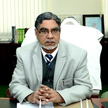

Prof. S. W. Akhtar
Chancellor
A civilized society is one that is built upon the foundations of scientific thinking and social welfare. Both of which at times are considered to be mutually exclusive, but are indeed interdependent.
Science is a study based on concrete facts and principles which lead to the absolute. Society on the other hand is based on relationships and affections which are considered to be unpredictable. A balance of both is desirable for a civilization to sustain and prosper.Underlying principle for both the extremes is the ability to learn, implement, relearn and unlearn, and in order to facilitate this process we have education systems.
Pressing need for a formal education system was felt as the quantum of human knowledge grew. This need gave way to the establishment of centers for learning.
The establishment of the Integral University as a center for learning was a small step in the direction of achievement of the vision to educate and empower people.
In tune with the motto “Inspiring Existence”, the people at Integral University strive to attain a level of perfection and excellence that is at par with the best.
The University offers an array of subjects that cater to the capabilities of different individuals at various levels of education.
Primarily, the aim is to enrich and support the individual in their endeavor towards the attainment of knowledge, and wisdom to apply that knowledge, in coherence with the aims and ambitions of the individual in particular and for the greater good of human kind in general.
With this honorable intent, minds with ingenuity, talent and ambition are welcome to join us, to seek the realization of their goals and satiation of their thirst for knowledge and wisdom.